Visual Studio Code Installation Guide
A Step-by-step guide for VS Code installation and configuration.
Why Visual Studio Code?
Visual Studio Code (VS Code) is a cross-platform code editor that works on Windows, Linux, MacOS as well as web-browsers. It is based on the open-source Visual Studio Code project. It is one of the most widely used editors and has support for all major programming languages.
We recommend using Visual Studio Code for all our courses that require a code editor. It has built-in support for editing Jupyter notebooks - making it an ideal editor for Data Science workflows. It also comes with support for AI-Assisted coding and a large ecosystem of Plugins.
Install Visual Studio Code
Windows
- Visit the Download
Visual Studio Code page and download the User Installer for
your your processor type. This will download an
.exefile. Intel-processor based system should download thex64version and the ARM-processor based systems should use theArm64version.
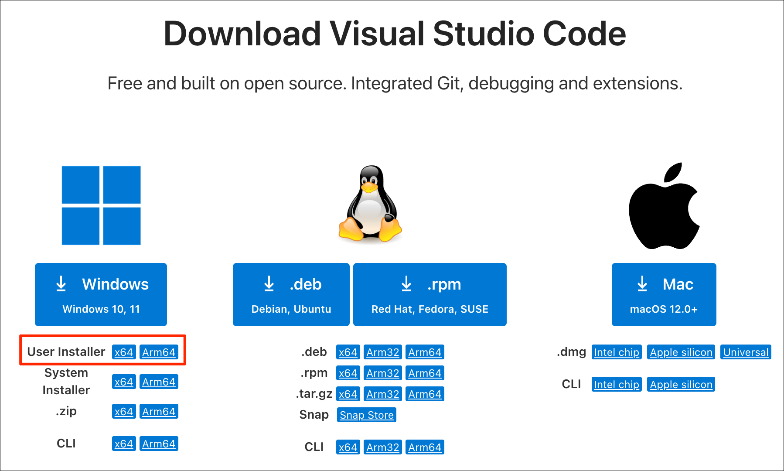
- Run the downloaded
.exefile to start the installer. Select I accept the agreement and click Next.
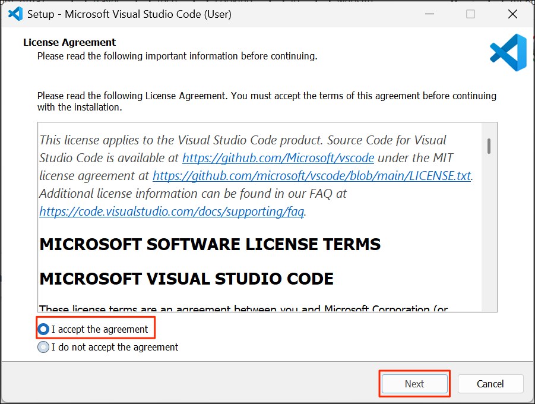
- For Select Additional Tasks, you can check all the options and click Next.
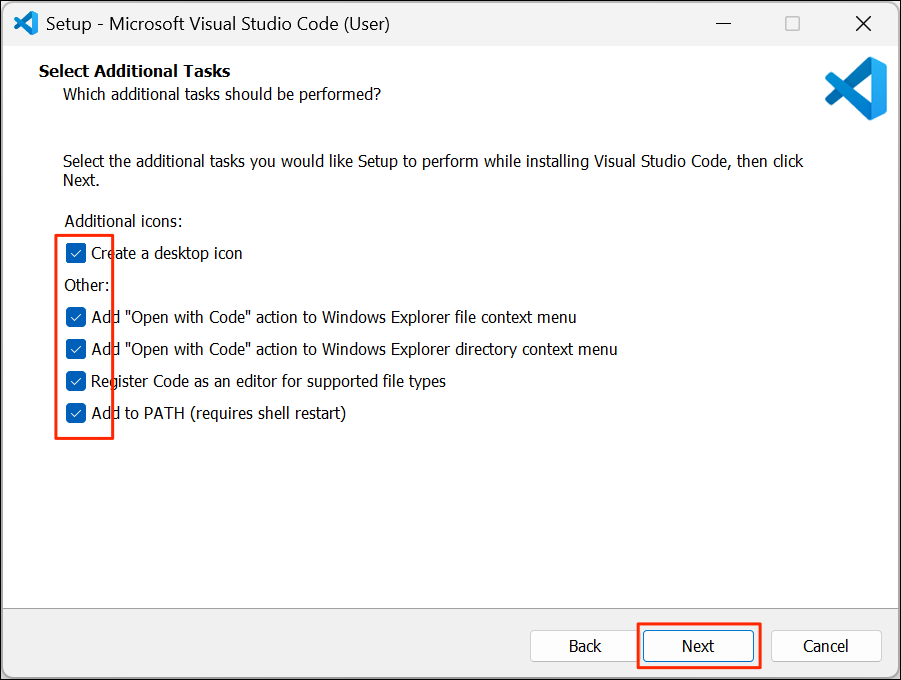
- Confirm the selected options and click Install.
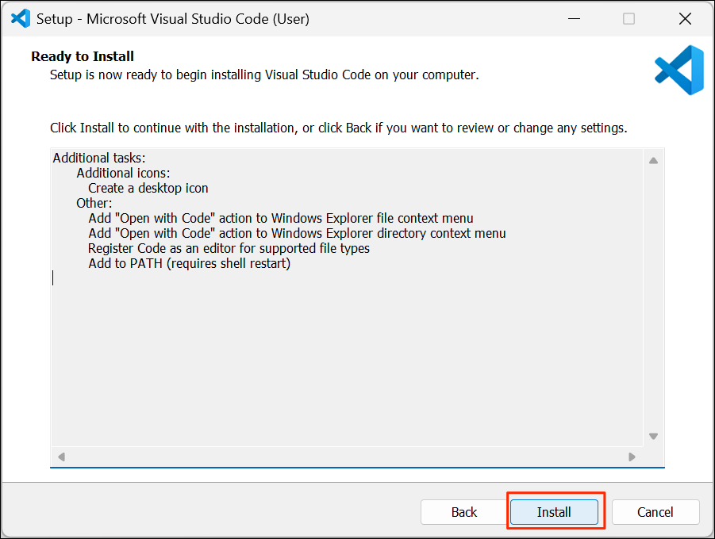
- Once the installation is complete, check the Launch Visual Studio Code option and click Finish.
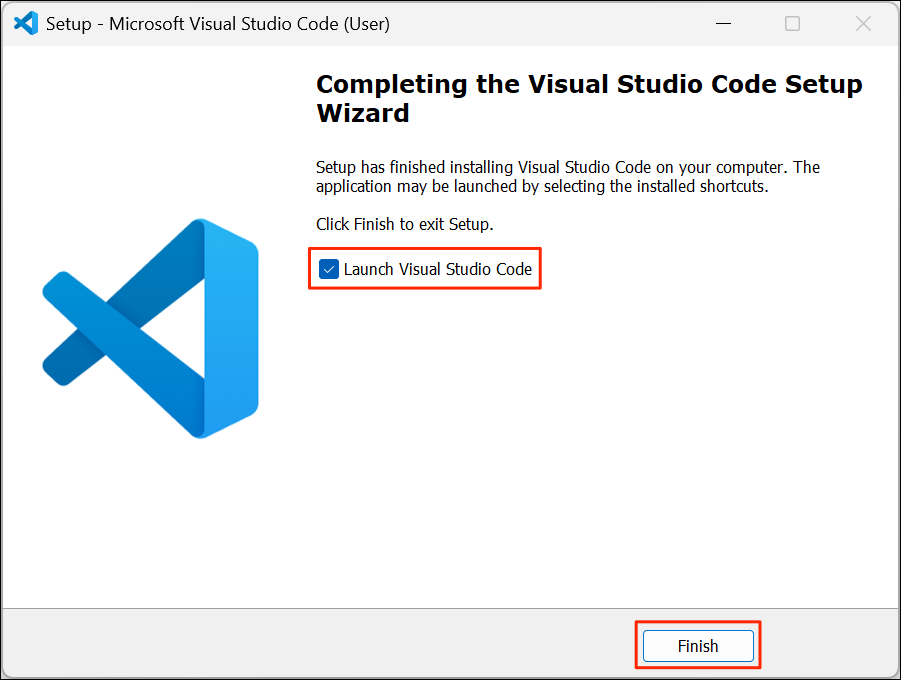
Mac
- Visit the Download
Visual Studio Code page and download the
Macinstaller. This will download a Universal.dmginstaller.
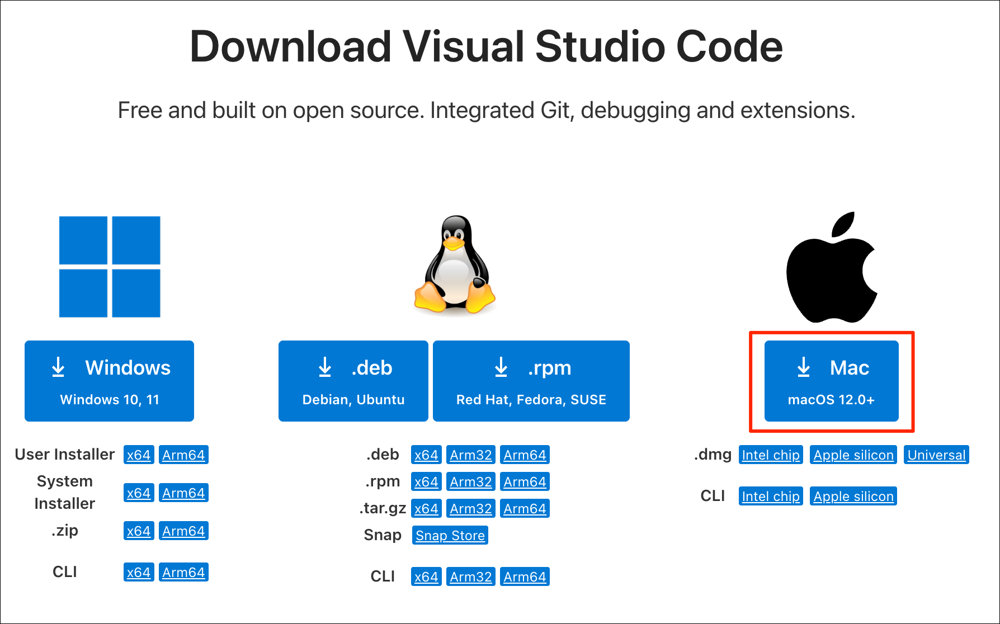
- Once downloaded, double-click the installer to open it.
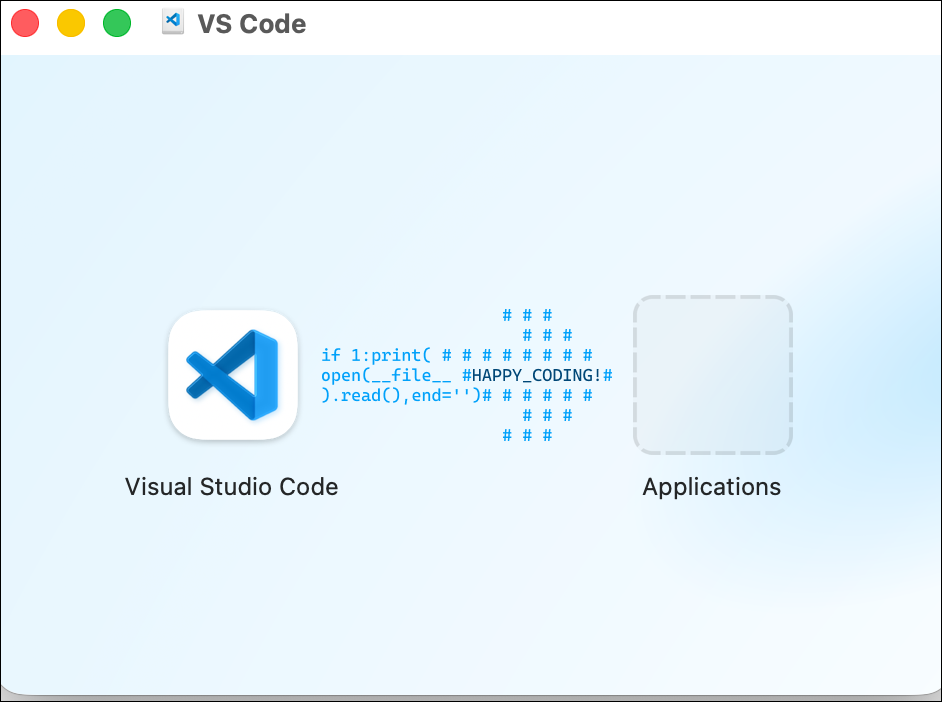
- Drag the Visual Studio Code icon to the Applications folder.
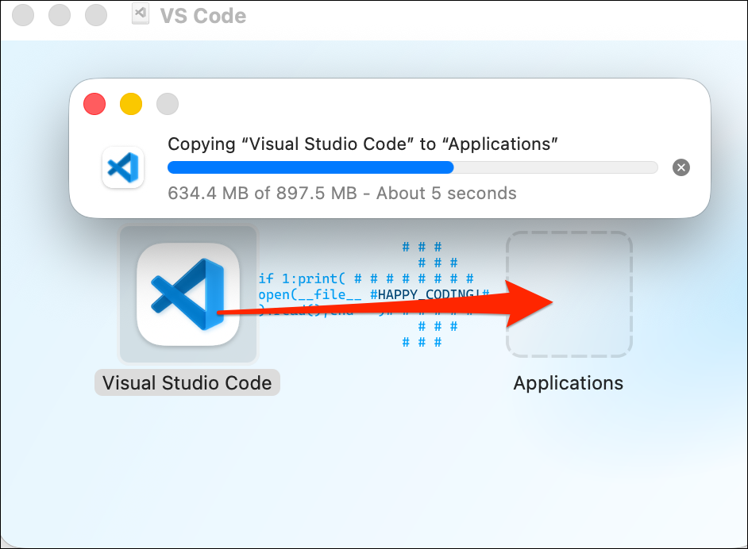
- Open the Applications folder and double-click the Visual Studio Code application icon to launch it.
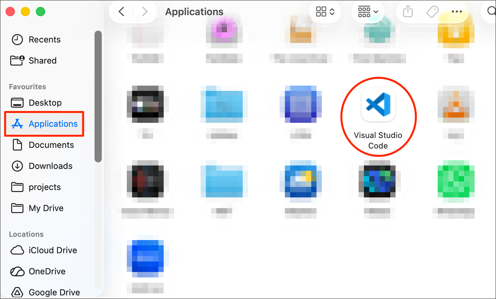
- You will be prompted with a security warming. Click Open

Linux
- Visit the Download
Visual Studio Code page and download the
.debor.rpminstaller for your your processor type.
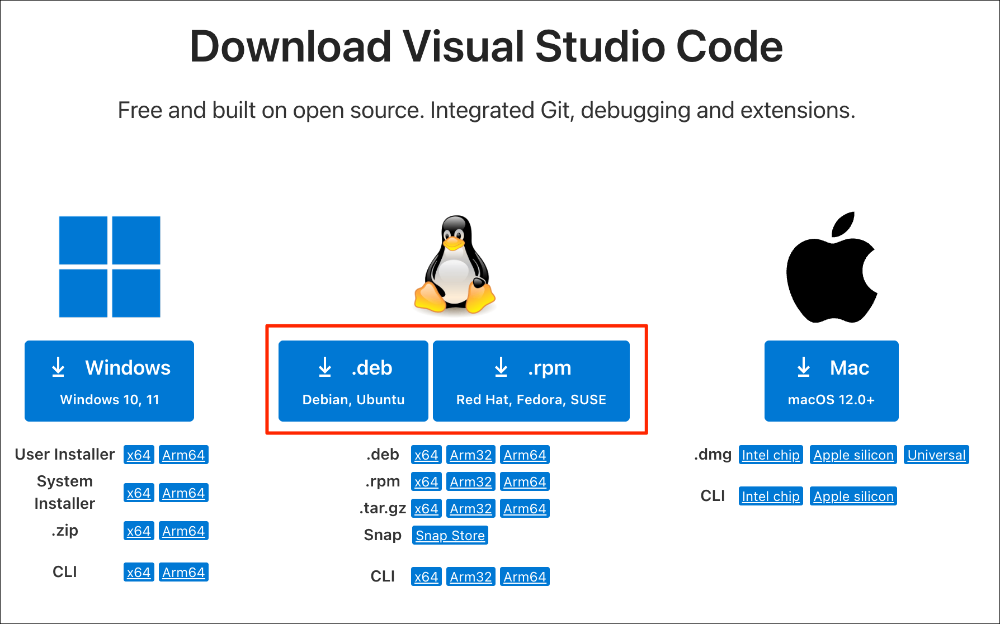
- Running the installer will depend on your flavor of Linux. On
Ubuntu, open a Terminal and
cdto the directory containing the downloaded installer. Run the installer using the following command.
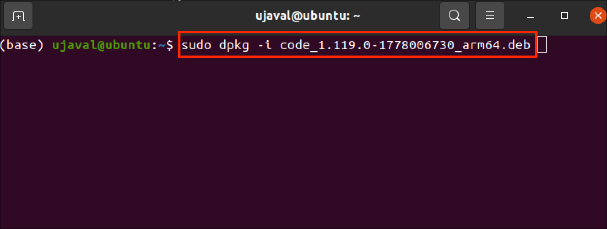
- When prompted to Add Microsoft apt repository for Visual Studio
Code?, select
Yesand press *Enter.
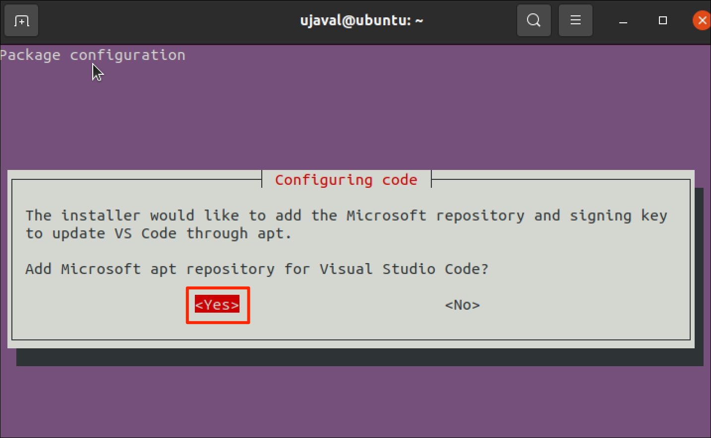
- Once the installer finishes, you can launch Visual Studio Code by
typing the command
codein a Terminal.
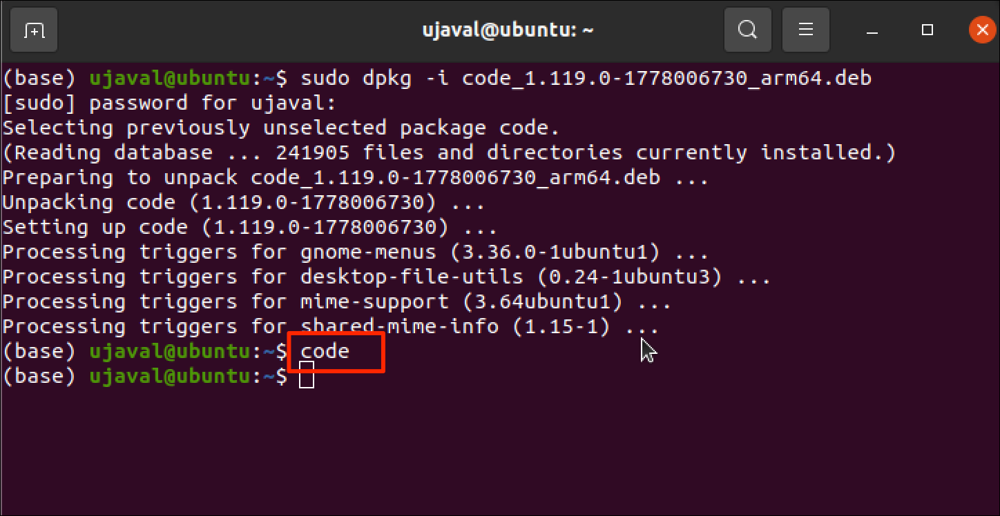
Configure Visual Studio Code
When you first launch the editor, you will need to choose some settings.
- Visual Studio Code comes with a free plan of GitHub CoPilot AI Assistant. To enable it, you need to sign-in to your GitHub account. Click Continue with GitHub and complete the sign-in to activate the assistant. If you do not want this, click Continue without Signing In button at the bottom-right corner.
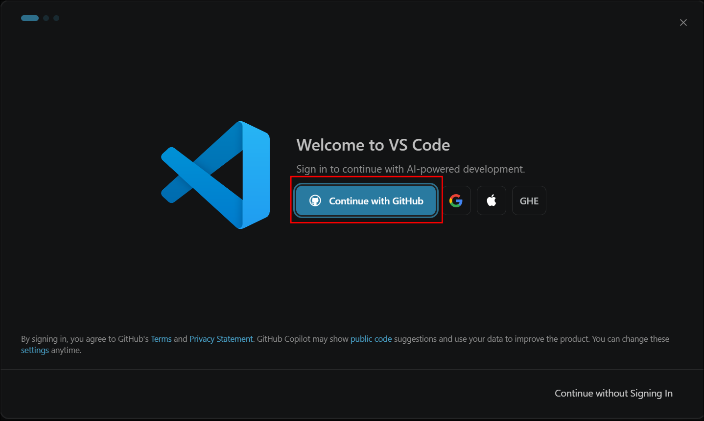
- You will be prompted to choose a Color Theme. Select the Light or Dark theme based on your preference and click Continue.
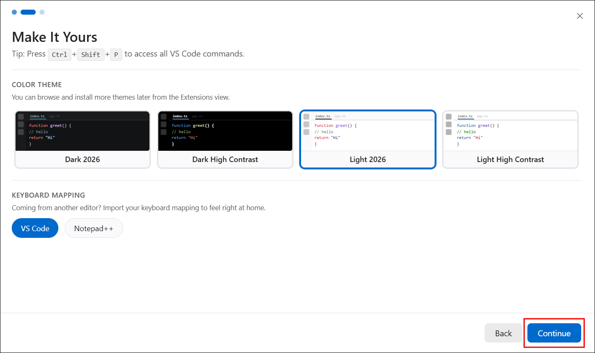
- Visual Studio Code supports agentic coding via the built-in Chat. Select hte Agent mode and click Get Started.
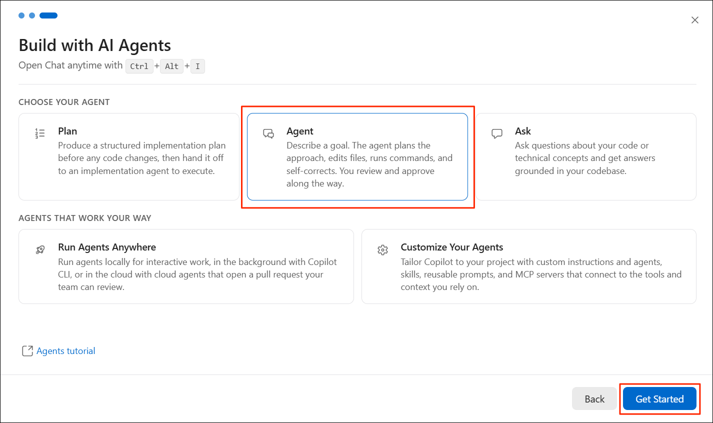
- The editor is now ready to use.
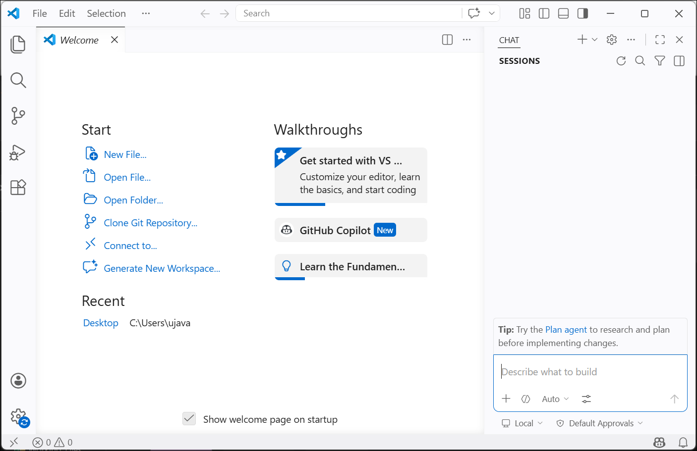
If you want to report any issues with this page, please comment below.